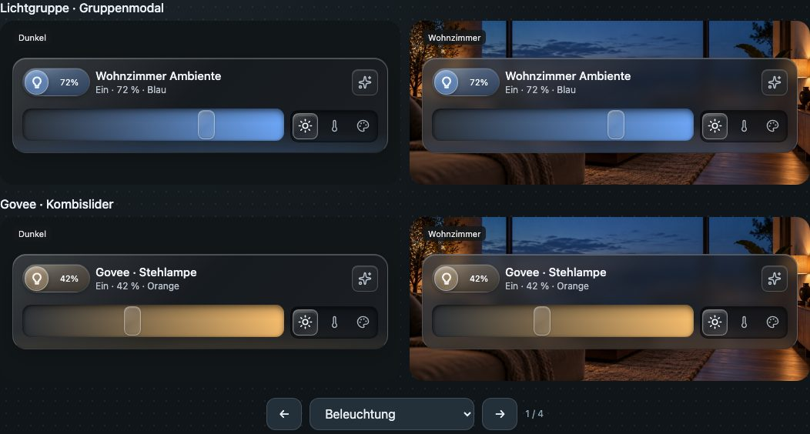

Satin Glass · Kartensystem
Die gemeinsame Gestaltung für acht Kartenfamilien: Lichtgruppe, Stehlampe, Steckdose, Ventilator, Button, Mushroom und zwei Thermostate.
Alle elf interaktiven Entwürfe der Serie — von den ersten Glaslinsen bis zum gemeinsamen Satin-Kartensystem.
Satin Glass ausprobieren ↗
Satin Glass / acht KartenfamilienDie gemeinsame Gestaltung für acht Kartenfamilien: Lichtgruppe, Stehlampe, Steckdose, Ventilator, Button, Mushroom und zwei Thermostate.